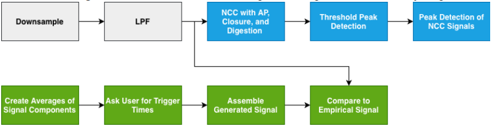
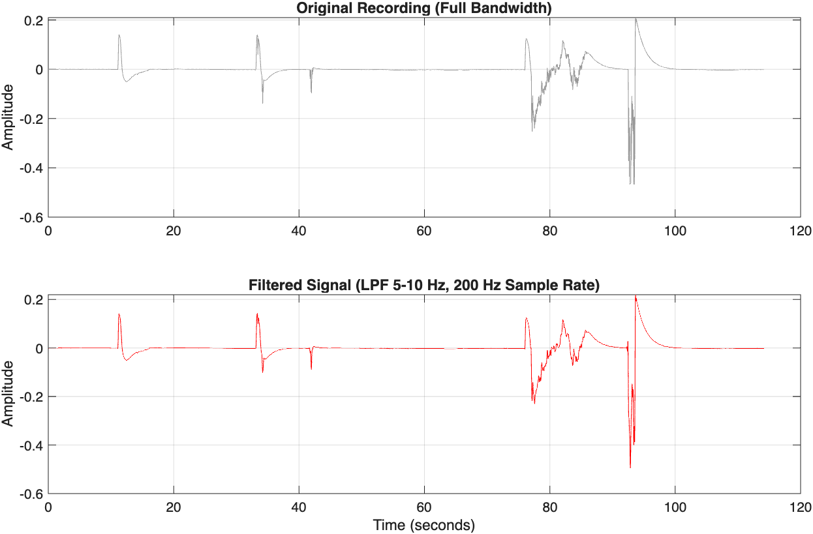
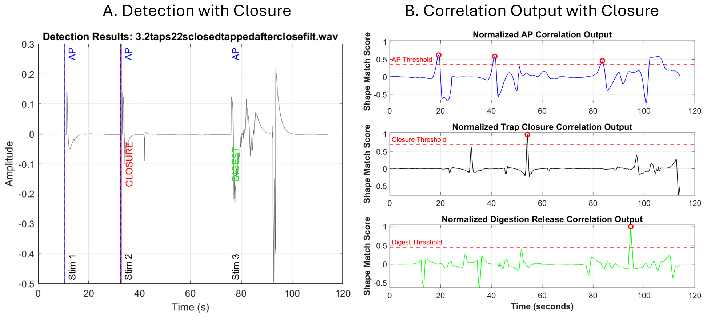
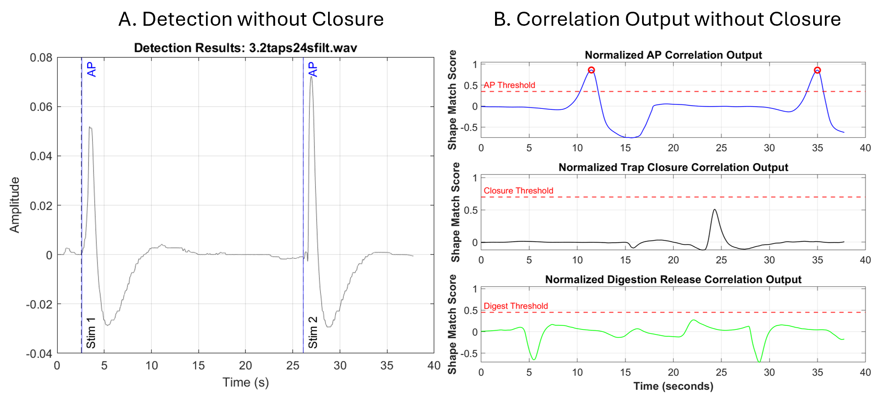
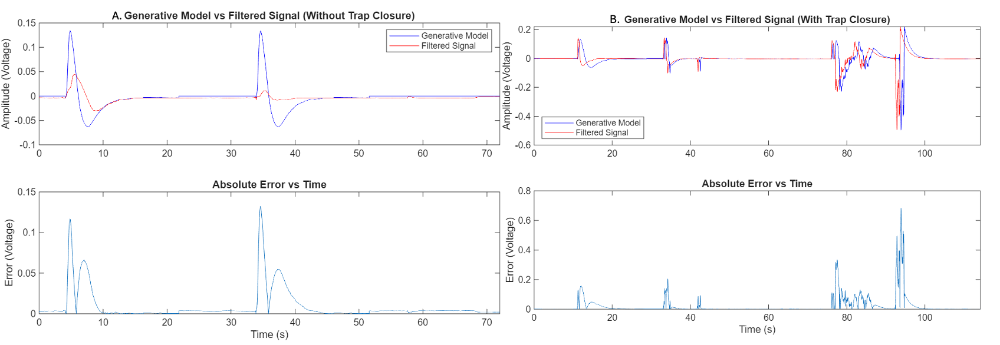

Venus Flytrap Electrophysiological Modeling
1. Overview & Objectives
Project Scope: Investigated whether electrical signals (action potentials) generated by the Venus Flytrap (Dionaea muscipula) can be reliably measured and modeled to predict action potential timing, trap closure, and digestive enzyme release[cite: 54].
Core Achievements: Developed a custom MATLAB signal processing pipeline using low-pass FIR filtering and normalized cross-correlation (NCC) templates to achieve an overall event detection F1-score of 0.99 with no false negatives across 24 experimental trials[cite: 54].
2. Experimental Setup & Data Acquisition
Action potentials were recorded from 5 healthy plant traps using a Plant SpikerBox amplifier connected via a positive electrode gel lead secured to the midrib/spine and a reference ground electrode placed in the soil[cite: 54, 56].
Mechanical stimulation was applied using a plastic rod while synchronized with 240 fps slow-motion video to measure exact mechanical-to-electrical latencies[cite: 56, 57]. Stimulus intervals were systematically varied from single taps to multi-tap sequences (2 to 3 taps) at decreasing inter-stimulus intervals (ISIs) to analyze counting behavior and recovery dynamics[cite: 57].
3. Signal Processing & Filtering Pipeline
Raw audio/voltage `.wav` files recorded via Spike Recorder were imported into MATLAB for preprocessing[cite: 57]. Signals were downsampled to 200 Hz and passed through a custom 50th-order low-pass FIR filter to remove high-frequency baseline drift and noise without inducing phase distortion[cite: 57, 58].


Power Spectral Density (PSD)
Figure 3: Power spectra before and after filtering, demonstrating effective attenuation of frequency components above 25–30 Hz[cite: 58].

Time-Domain Filtering
Figure 4: Comparison of raw and filtered time-domain recordings, highlighting baseline stabilization and distinct action potential deflections[cite: 59].
4. Template Matching & Event Detection
To isolate action potential characteristics, individual AP waveform events across trials were temporally aligned at their true peak and averaged to construct a normalized reference correlation filter template[cite: 57, 59].


5. Physiological Response & Threshold Detection
Separate correlation filters were created for action potentials, trap closure, and digestive enzyme release[cite: 60]. Thresholding these normalized outputs allowed the model to accurately classify whether consecutive stimulation events would trigger mechanical closure or remain open[cite: 61, 62].

Closure Detection (3 Taps)
Figure 9: Multiple stimuli exceeding thresholds for AP generation, trap closure, and subsequent digestion markers[cite: 62].

No Closure (2 Taps)
Figure 10: Two-tap stimulation triggering AP thresholds while remaining below closure and digestion detection thresholds[cite: 62].
6. Generative & Predictive Modeling
A generative model was constructed to assemble synthetic electrophysiological signals based on user-defined stimulus counts and inter-stimulus intervals (ISIs)[cite: 57, 63]. When compared against empirical data, the model successfully captured temporal firing dynamics and waveform morphology, though voltage magnitude scaling exhibited some variability[cite: 54, 63].

7. Key Findings & Future Work
- Latency & Recovery: Average latency from stimulus touch to AP onset was measured at 230 ms, and the recovery threshold required for a second AP to trigger closure was determined to be 22 seconds[cite: 63].
- Model Performance: Achieved an overall F1-score of 0.99 across 24 experimental trials with zero false negatives[cite: 54, 62].
- Future Directions: Integrating Convolutional Neural Networks (CNNs) or Recurrent Neural Networks (RNNs) to replace correlation templates, and expanding plant bioelectric studies to Mimosa pudica[cite: 64].